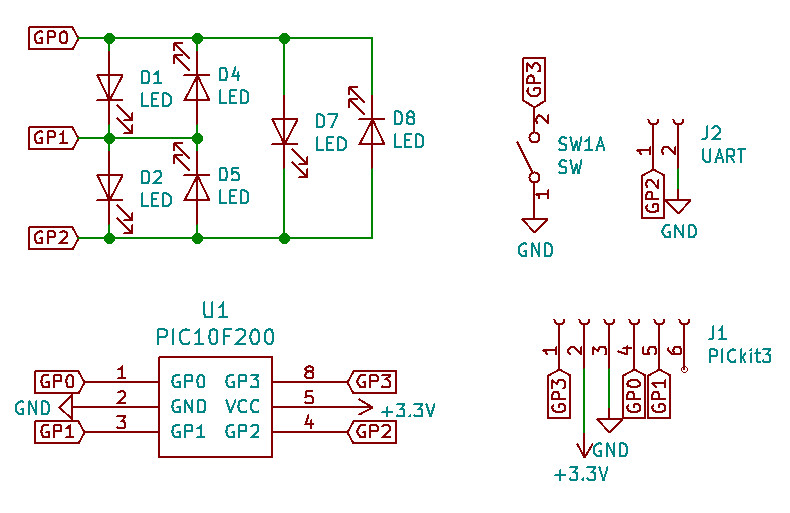
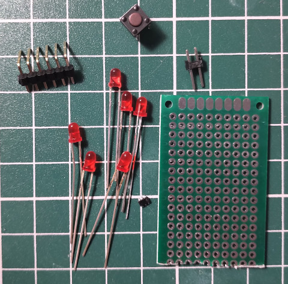
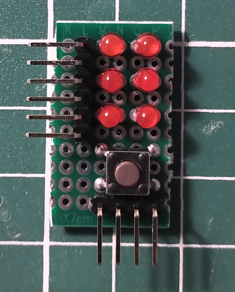
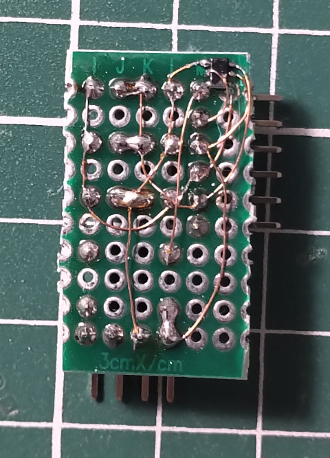
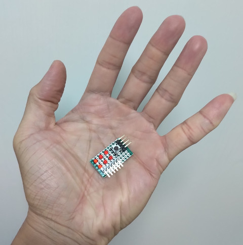

參考資訊：
https://en.wikipedia.org/wiki/Charlieplexing
http://dmitry.gr/?r=05.Projects&proj=03.%20Single-chip%2011x10%20LED%20matrix
Charlieplexing的概念是使用少量的I/O控制多顆LED，當GPIO數量為N時，可控制的LED數量為(N * (N - 1))，如：3根GPIO就可以控制6顆LED，雖然看似不錯，不過存在許多限制，如：GPIO驅動電壓對於LED驅動電壓的計算以及GPIO除了高低電位之外，還需要有輸入高阻抗的支援，另外，當其中一顆LED壞掉時，會有連帶崩壞效應，不過這樣的實驗還是激起司徒的興趣，因此，司徒使用迷你PIC10F200(6隻腳位)來完成這樣的電路
電路圖




